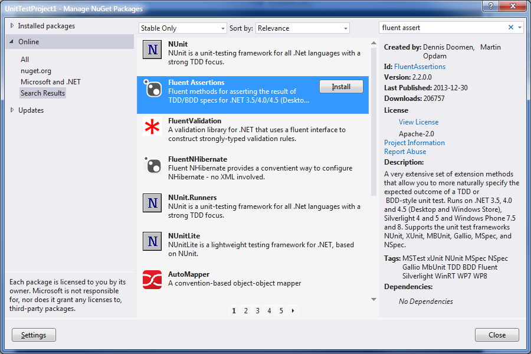

So I want to write a post on how to create your own NuGet packages. Before I do that I think I better first do a prerequisite post on what NuGet is, how to use it, and what it does.
NuGet is a tool allows you to download and include source files (cs, vb, js, etc.) or compiled assemblies (dll) in your Visual Studio projects. Now there is a lot of code libraries out on the web; open source isn’t a new thing. The difficult thing is finding that code, downloading, adding it to your source control, referencing it from your project, and managing future updates of that library when they become available. Repeat all those steps for each dependency of that library. NuGet simplifies all these steps to just a few clicks.
Although there is a lot of third party open source code libraries available, it should be noted that Microsoft now heavily relies on the NuGet as well. If Microsoft were to push every new library they think up into the official .NET Framework, the Framework would take many terabytes to install. Instead it is a far better approach to make available all the libraries online and let you pick and choose the few you want. Those libraries you choose get downloaded and distributed with your project and stay out of the .NET Framework.
NuGet ships with Visual Studio 2012 and 2013. Let’s jump right in. Open up new or existing project. Let’s assume it is a unit testing project. Now let’s add a NuGet package to our solution.
To do that we’ll need to open the NuGet Package Manager. This is available from the menus at “Tools-NuGet Package Manager-Manage NuGet Packages for Solution”. Alternatively, it’s available from the quick launch search by typing Ctrl+Q, NuGet, then select “Project – Manage NuGet Packages”.

To view the available packages online choose the “Online-All” folder on the left. By default there are two servers available to download packages from: nuget.org and Microsoft and .NET. To list both choose All.
There are thousands of packages to choose from in the list. You may want to refine it a little by using the Search box in the top right (Ctrl+E). Let’s say I want to improve the readability of my unit tests by wrapping my assertions in a Fluent style API. So I search for “fluent assert”.
The search results are in the center and I can browse through them. Click on each one and have its details show up on right. If searching for a new library you're not familiar with you’ll want to read the Description and probably click the Project Information link to take you to the project’s web site to get more information.
Also note: the license. You are downloading code from the web so it is important to take note of the license restrictions of the libraries you are consuming. I’m not a lawyer, but if the license is Public Domain or the Microsoft Public License you’re probably OK. If no license is listed the default is to standard copyright law, which means all rights are reserved by the author. I like the website http://choosealicense.com/ for a quick reference guide to the types of licenses commonly out there. If you’re not sure, consult your legal department before downloading.
With the package found the last step is that Install button. That will download the files and automatically include them in your current project. If it was a DLL you downloaded that DLL will now be in your list of project references. If it was a code file it will be referenced by your project in the location under your project set by the package author.
Installing a NuGet package will create a “packages.config” file at the same level as your project. This will get added to your project. The packages.config file contains a simple list of the NuGet packages that have or should be installed for this project. Every published package has a unique ID and a version number. These are listed in this file.
<?xml version="1.0" encoding="utf-8"?>
<packages>
<package id="FluentAssertions" version="2.2.0.0" targetFramework="net35" />
</packages>
In addition to the packages.config file the NuGet will also download the DLLs or code files. It will create a “packages” folder at the root of the solution. Under this folder, subfolders will be created for each package that is installed. The subfolders will be named according to their unique NuGet ID and their version number. Within this folder will be a nupkg file, which is the actual full package in a compressed form. There may also be a “lib” folder that contains the DLL that will be referenced by your project. There may also be a “content” folder, which contains a copy of the source code files that have been added to your project.
You do NOT need to add the solution’s “packages” folder to your source control system (TFS, git, etc). You do need to add the project’s packages.config file and the source code files added below the project level.
If you were to get the solution from source control on a different computer, obviously the packages folder will be missing. However Visual Studio does have the packages.config file for each project. Upon building the solution, Visual Studio will detect that the packages folder is missing. It will automatically download those packages at the versions listed in the packages.config file.
This restore feature of NuGet provides a value-add that source control systems will benefit from. It is not recommended that you include binary files (dll) in source control. Most source control systems are design to handle code files, which are small ASCII files. Large binary files can bloat the source control system, because they maintain a history on every version of every binary file that changes.
When you use NuGet there is only one official copy of each DLL and it is on the NuGet server. The NuGet servers at nuget.org and Microsoft do not allow for deleting or editing of a version once it is posted. This means it is safe to omit these DLLs from your source control repository.
The automatic restore feature I described is how it works in NuGet 2.7 and 2.8. It should be noted that previous versions did not enable automatic restore. Early users had to give explicit consent for this to happen. I mention this because if you see a menu “Enable NuGet Package Restore” when you right click on your solution, do not click it. That menu is obsolete and was only needed for NuGet 2.6 or earlier. Clicking that menu will revert your solutions behaviour back to how it worked in v2.6. See this post for more details.
Also note that the automatic restore during build is a Visual Studio feature. If you build from outside Visual Studio, say in an automated build process using msbuild.exe, you will need to use nuget.exe to restore your packages before calling msbuild. This is pretty simple. You can get a copy of nuget.exe here. The command is simply “nuget.exe restore”, where the current folder is set to your solution folder.
I have a few last notes on using NuGet. To uninstall a package, return to the NuGet Package Manager screen. At the top left choose the Installed Packages folder. Click on the package and click the Uninstall button.
If a new version of a package becomes available in the future this can be upgraded from the NuGet Package Manager screen. On the left choose the Updates folder. The Updates folder will be labelled “Updates (X)” if updates are available, where X is the number of packages with updates available. Updating is a manual, opt-in action that is done with a single click of the Update button. NuGet or Visual Studio will not upgrade versions without your knowledge.
I didn’t go into examples of this in this post, but NuGet packages can have dependencies to other NuGet packages or to assemblies in the .NET Framework that may not yet be included in your project. I describe this in more detail in my next post. When you install one of these packages any dependencies will be automatically added.
Hopefully that is enough background on what NuGet is and how to use it. It is very powerful having all these open source and Microsoft libraries available to you at your fingertips. In my next post I turn the focus internal, describing how you can create your packages and NuGet server.